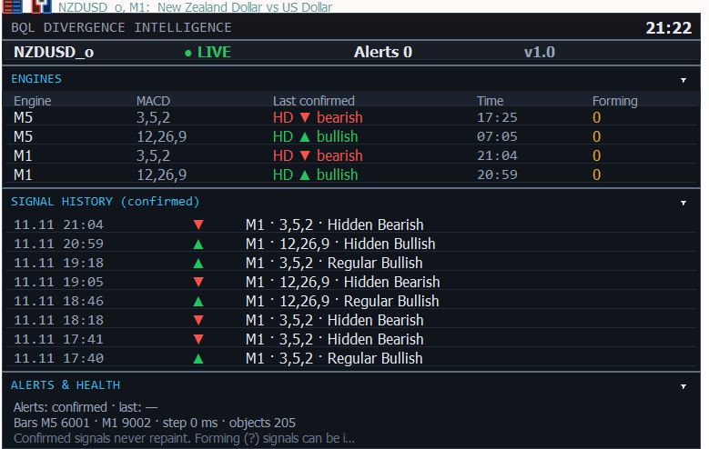

چهار موتور MACD
M5 و M1، هرکدام با موتور سریع ۳,۵,۲ و استاندارد ۱۲,۲۶,۹، مستقل و فقط روی کندل بسته.
BEHROUZI QUANT LAB · BQL QUANT ENGINE
واگرایی مهندسیشده، نه حدسی.
خانوادهای از اندیکاتورهای MetaTrader 5 بر پایهی موتور تأییدشدهی BQL QUANT ENGINE. نسخهی 1.0.0 موتور واگرایی را تحویل میدهد: واگرایی معمولی و مخفی MACD در M5 و M1، چرخهی شفاف سیگنال و سیگنال تأییدشدهای که Repaint نمیشود.
Created & Developed by Engineer Mohammad Behrouzi
اندیکاتور بومی MQL5 برای متاتریدر ۵. فقط تحلیل و هشدار.

M5 و M1، هرکدام با موتور سریع ۳,۵,۲ و استاندارد ۱۲,۲۶,۹، مستقل و فقط روی کندل بسته.
RD و HD صعودی و نزولی، با تلورانس مبتنی بر ATR و نوسان MACD.
در حال تشکیل ← تأییدشده یا باطل. هر برچسب زمان تشکیل پیوت و زمان تأیید را نشان میدهد.
سیگنال تأییدشده هرگز حذف یا جابهجا نمیشود؛ سیگنال در حال تشکیل جدا و مشخص است.
پنج گام قطعی روی کندلهای بسته — همان کدی که کندلبهکندل آزمون تطبیق شد.
OHLC کندلهای M5 و M1؛ سیگنال تأییدشده هرگز از کندل در حال تشکیل نمیآید.
تشخیص سوینگ مقیاسشده با ATR برای هر موتور (سریع و استاندارد).
پیوتهای قیمت با پیوتهای خط اصلی MACD در همان لگ جفت میشوند.
معمولی یا مخفی، صعودی یا نزولی، با تلورانس مقیاسشده با نوسان.
در حال تشکیل ← تأییدشده یا باطل، با زمان پیوت و زمان تأیید روی هر برچسب.
اعداد واقعی از آزمون تطبیق خود ما (EURAUD M5/M1). تعداد مشتری و نظرها فقط وقتی وجود داشته باشند اینجا نمایش داده میشوند.
| رسم با دست | BQL Divergence Intelligence | |
|---|---|---|
| هر بار همان جواب | نه — به معاملهگر و روز بستگی دارد | ✓ بله — قواعد قطعی روی کندل بسته |
| واگرایی مخفی | بهراحتی از دست میرود | ✓ در M5 و M1 و با هر دو تنظیم MACD |
| Repaint | خطوط بعداً دوباره کشیده میشوند | ✓ سیگنال تأییدشده فقط اضافه میشود |
| تأخیر تأیید | بهندرت سنجیده میشود | ✓ روی هر برچسب چاپ میشود |
| هشدار | باید چارت را تماشا کرد | ✓ پاپآپ، صدا و پوش به تفکیک مرحله |
| شواهد | حکایت | ✓ آزمونهای منتشرشده، همراه با نتایج منفی |
که از واگرایی استفاده میکند و میخواهد یکسان و با هشدار تشخیص داده شود.
که برای پژوهش خودش منبع واگرایی بدون Repaint و ثبتشده میخواهد.
که میخواهد واگرایی کتابی را روی چارت زنده ببیند و با درسهای آکادمی مقایسه کند.
کلاسیکهای روانشناسی بازار را کامل، رایگان و قانونی بخوانید — بهعلاوهی نقد مستقل کتابها و مقالههای امروز.
حساب واقعی کلید لایسنس میخواهد. پرداخت دستی بررسی میشود و کلید به حساب MT5 شما متصل است.
بهزودی. از سرویس ایمیل پولی و پیکسل ردیابی استفاده نمیکنیم؛ تا فعال شدن، اینجا هیچ اطلاعاتی جمع نمیشود.